2.1 Data Visualisation
Actuarial Data Science Applications (ACTL4305/5305)
Reading List
- The Art of Data Science, Chapter 4.1, 4.2.
- R for Data Science Online Book, Chapters 2, 3
Learning Objectives of Exploratory Data Analysis
- Understand how to do exploratory data analysis with the tidyverse package in R
- Explore features of data using data visualisation.
- Explain common features of data, such as categorical variables, missing values, unreliable/non-validated data, outliers and high cardinality features, that may lead to problems.
- Apply appropriate methods to deal with common data problems.
- Apply a range of techniques to assess data quality.
- Use R to manipulate (eg filter, merge, sort, group by, summarise, etc.)
- Use R to import, export and tidy data.
- Apply the process to do exploratory data analysis with practical datasets
- Apply R Markdown for communication and reproducible analysis
Exploratory Data Analsis: an Introduction
Exploratory Data Analysis (EDA)
- A set of procedures to produce descriptive and graphical summaries of the data
- Explore the data as they are without making assumptions
- To examine your data and understand relationship among variables
- To determine if there are any problems with your dataset
- To determine whether the question you are asking can be answered by the data that you have
- To develop a sketch of the answer to your question
The process of exploratory data analysis
The EDA is an iterative cycle. You:
- Formulate your question
- Search for answers by
- Collect and Import data
- Check data quality and Cleansing data
- Manipulate and Transform data
- Visualise data
- Use what you learn to refine your questions and/or generate new questions
- Data Visualization is arguably the most important tool for EDA.
Example
- What pattern can you see from this plot?
Plot 1
Example
- What pattern can you see from this plot?
Plot 2
Data Visualization
‘Visually attractive graphics also gather their power from content and interpretations beyond the immediate display of some numbers. The best graphics are about the useful and important, about life and death, about the universe. Beautiful graphics do not traffic with the trivial.’ — Edward Tufte
Data Visulization using ggplot2
Explore features of data using data visualisation
- A statistical graphic maps variables of
- a dataset to
- aesthetic properties of
- geometric objects.
ggplot2is part oftidyverse- Using
ggplot2to visualise your data - A ggplot2 grammar guide
ggplot2
- reload the package everytime you start a new session.
package::function()ggplot2::ggplot()
First steps
- Question: Do cars with big engines use more fuel than cars with small engines?
- Data: The
mpgdata frame inggplot2(ggplot2::mpg)mpgcontains observations collected by the US Environmental Protection Agency on 38 models of car, 1999-2008.- A data frame with 234 rows and 11 variables:
- Variables:
manufacturer: manufacturer namemodel: model namedispl: engine displacement, in litresyear: year of manufacturecyl: number of cylinderstrans: type of transmissiondrv: the type of drive train, where f = front-wheel drive, r = rear wheel drive, 4 = 4wdcty: city miles per gallonhwy: highway miles per gallonfl: fuel typeclass: “type” of car
The mpg data
Creating a plot

Declaring Data
Declaring data: method 1

Declaring data: method 2
- Pipe data into
ggplot()using the pipe operator:%>%

Exercises
Run
ggplot(data = mpg). What do you see?How many rows are in
mpg? How many columns?What does the
drvvariable describe? Read the help for?mpgto find out.Make a scatterplot of
hwyvscyl.What happens if you make a scatterplot of
classvsdrv? Why is the plot not useful?
Aesthetic Mapping
Aesthetic mappings
- An aesthetic is a visual property of the objects in your plot.
- Aesthetics include things like the position, size, the shape, or the color of your points.
- Mapping: variables are ‘mapped’ to (represented by) aesthetics.
A main pool of Aesthetics
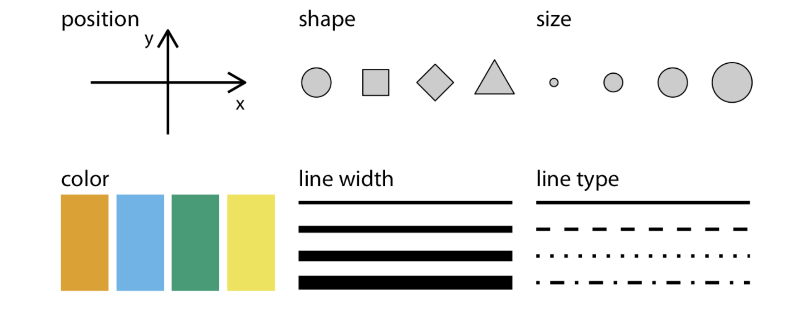A main pool of aesthetics
Note: This figure is from Wilke’s Fundamentals of data Visualization.
aes() means ‘Ask’
aes(): What variables are we asking the aesthetic (color, position, shape, etc.) to represent?aes(color=gender): ‘Please represent the variablegenderfor me using different colors.’
More aes mappings
mpg_plot= ggplot(data = mpg) + # the dataset
aes(x = displ) + # the x position
aes(y = hwy) + # the y position
geom_point() +
#the point geometric shape, the above aes are requied and
#the below are optional
#theme(axis.title=element_text(size=14,face="bold"))+
aes(color = class) + # Color for type of car
#aes(shape = class) +
#ggplot2 will only use six shapes at a time. By default,
#additional groups will go unplotted when using 'shape'.
aes(size = cty) + # Size for city miles per gallon
aes(alpha = year) # transparency for year of manufacturePlot
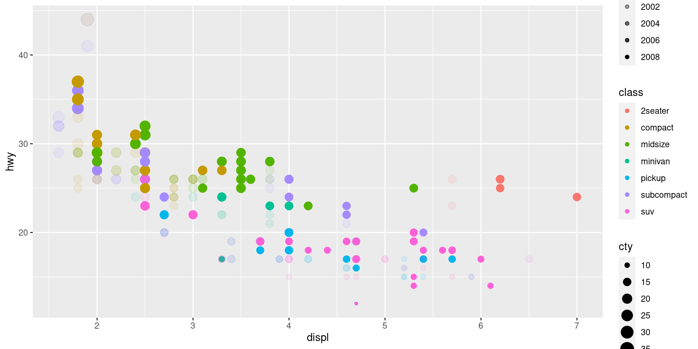Other aes for other geometric objects
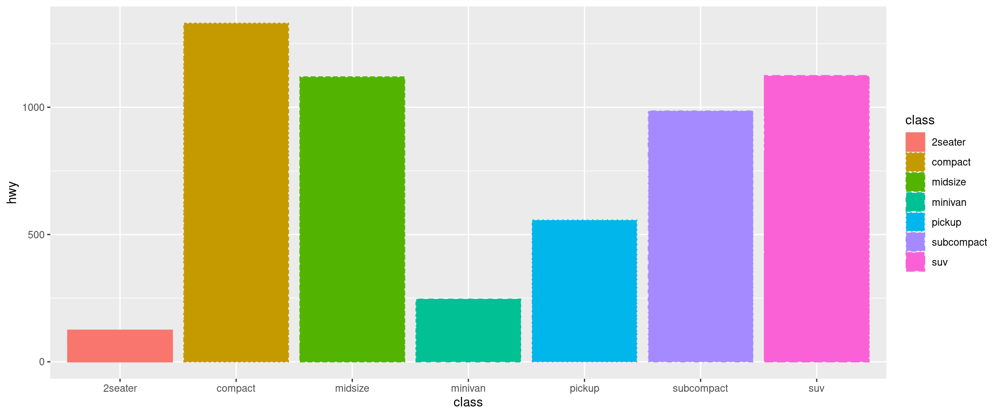Unmapped aesthetics
Plot
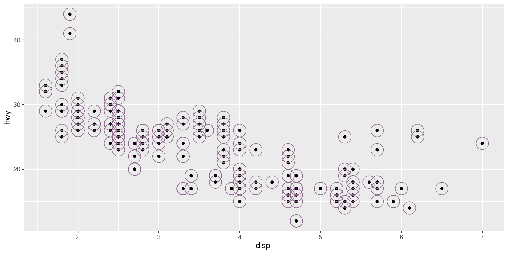Exercises:
- Look at the
helpforgeom_text(?geom_text). What are the required aesthetics? - Which variables in
mpgare categorical? Which variables are continuous? (Hint: type?mpgto read the documentation for the dataset). How can you see this information when you run mpg? - Map a continuous variable to color, size, and shape. How do these aesthetics behave differently for categorical vs. continuous variables?

Facets
Facets: facet_wrap
- facet your plot by a single variable
Facets: facet_grid
- facet your plot on the combination of two variables
Geometric Object
A complete sentence of ggplot
data+aes+geom- plots
- Nouns: geometric objects
geom_point()geom_col()geom_line()geom_text()geom_segment()geom_smooth()geom_bar()- etc.
- The conditional mood:
geomspecific data and aesthetic mapping
Different Geoms
Compare with
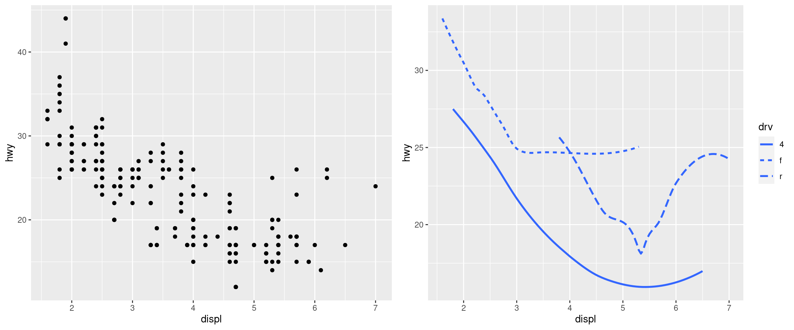Another Example: boxplot
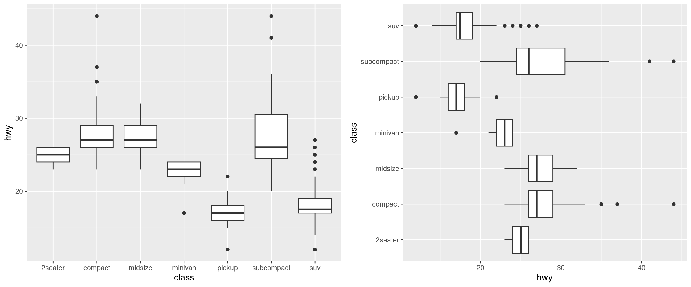Going local with data and aesthetics
mpg_plot= ggplot(data = mpg) + # the dataset
aes(x = displ, y = hwy) +
geom_point() +
aes(color = class) +
#xend and yend are required for geom_segment
#like creating a column with a single value
aes(xend = 0) + aes(yend = 0) +
#geom_segment() draws a straight line
#between points (x, y) and (xend, yend)
geom_segment(
#geom specific data, using 'sebset' to select data
data = subset(mpg, fl=="p"),
# geom specific (local) aesthetics
aes(size = cyl, alpha = cty),
color = "orange"
)Plot
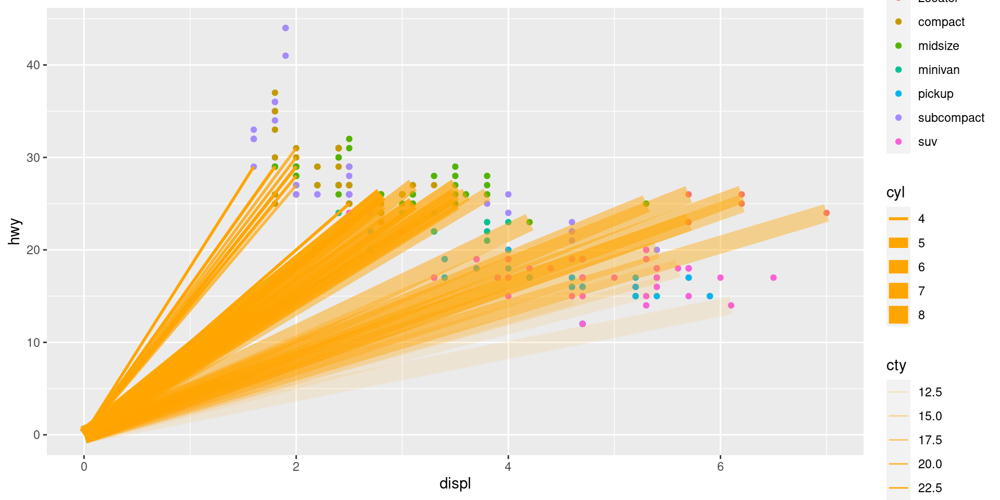Another Example
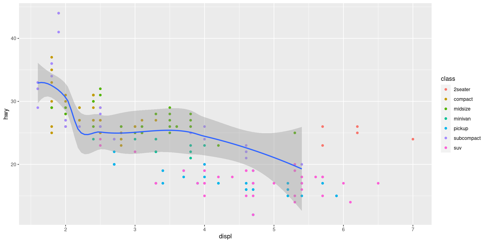Annotation 1
Plot 1
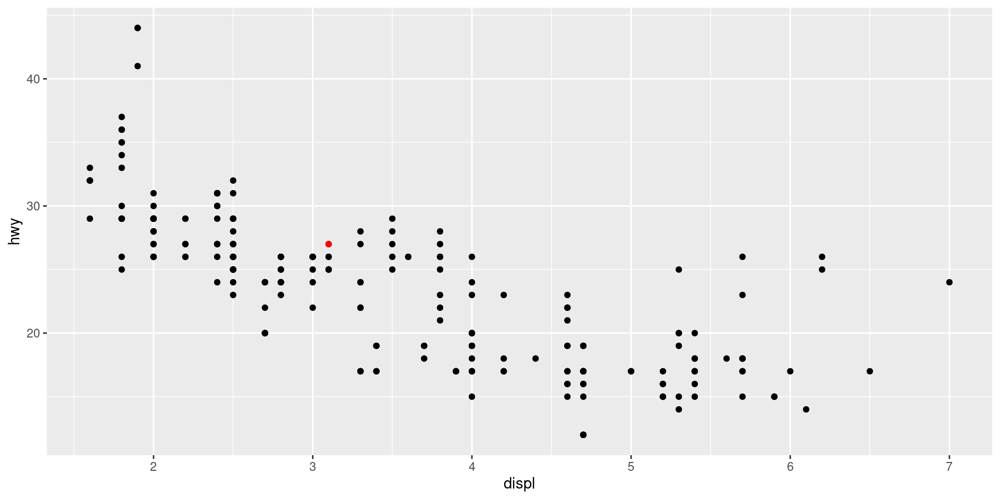Annotation 2
Plot 2
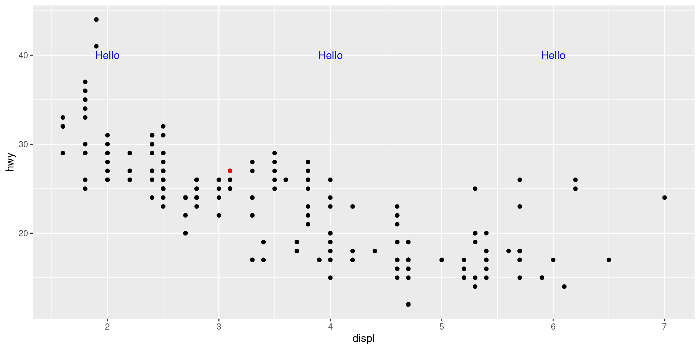Annotation 3
mpg_plot= ggplot(data = mpg) + # the dataset
aes(x = displ) + # the x position
aes(y = hwy) + # the y position
geom_point() + # the point geometric shape
annotate(geom="point",
x=3.1,
y=27,
color="red")+
annotate(geom="text",
x=c(2, 4, 6),
y=40,
label="Hello",
color="blue")+
annotate(geom="curve",
x=2,
y=39,
xend=3,
yend=27.3,
color="green",
arrow=arrow(angle=20))Plot 3
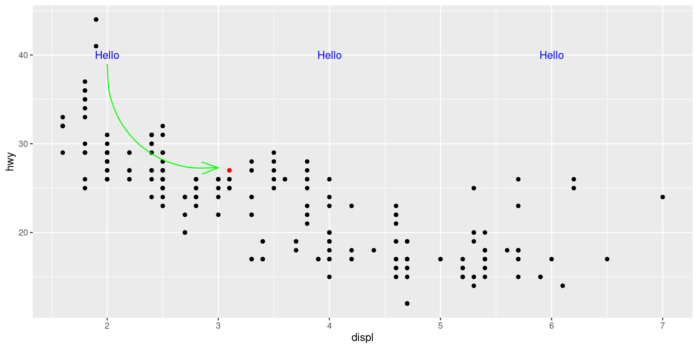Annotation 4
- use
geom_abline,geom_hline, andgeom_vline
mpg_plot= ggplot(data = mpg) + # the dataset
aes(x = displ) + # the x position
aes(y = hwy) + # the y position
geom_point() + # the point geometric shape
geom_abline(slope=5, intercept=3) +
geom_hline(yintercept= 30,
linetype="dotted", color="blue")+
geom_vline(xintercept=c(4,5),
linetype="dashed", color="red")Plot 4
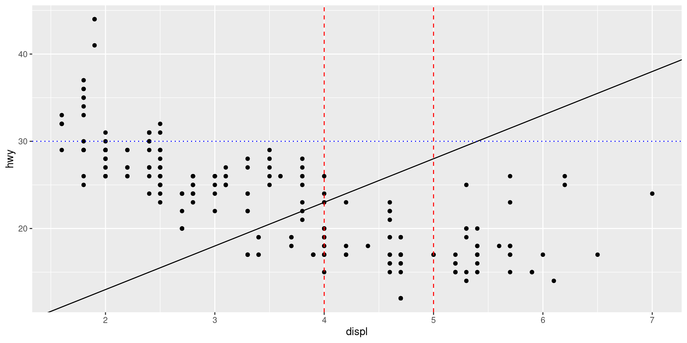Exercises
- What’s gone wrong with this code? Why are the points not blue?
- What happens if you map an aesthetic to something other than a variable name, like aes(colour = displ < 5)? Note, you’ll also need to specify x and y.
Interactive data visualisation (optional)
- R package: Shiny
- can host standalone apps on a webpage
- Example: Life Expectancy using data from the
- can embed them in R Markdown documents or build dashboards.